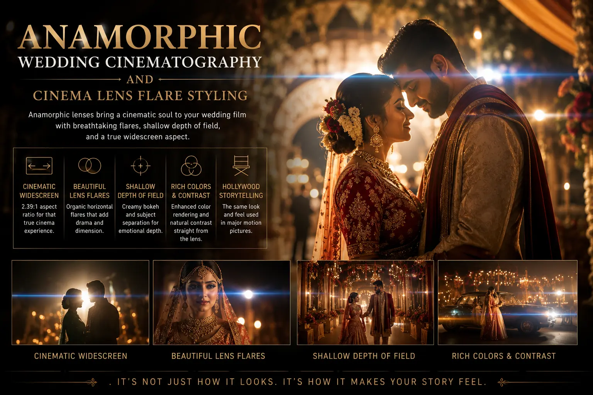
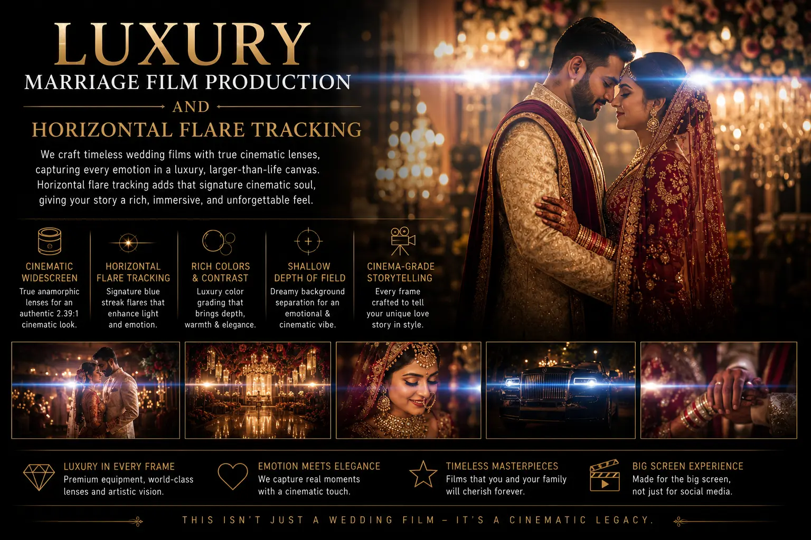

Why True Anamorphic Lenses Give Your Wedding Film an Authentic Hollywood Aspect Ratio
The Aspect Ratio That Defined Cinema
When you watch a Hollywood film — from Lawrence of Arabia to Dune, from Blade Runner to Oppenheimer — the ultra-wide frame that fills your vision from edge to edge is not a creative choice made in post-production by cropping the top and bottom of the image. It is an optical reality created by anamorphic lenses — specialised optics that compress a wider horizontal field of view onto the camera's sensor, then desqueeze the image to its full panoramic width during projection or playback. This is the 2.39:1 CinemaScope aspect ratio that has defined the cinematic experience for seventy years.
Anamorphic Wedding Cinematography brings this same optical technology to wedding filmmaking — not as a post-production crop or a digital filter, but as a true optical characteristic captured in-camera through real anamorphic glass. The result is a wedding film that looks fundamentally different from anything produced with standard spherical lenses: wider framing, characteristic horizontal lens flares, oval bokeh, unique depth rendering, and an unmistakable cinematic quality that viewers associate with Hollywood cinema because it is the same optical technology.
This is not an aesthetic preference — it is an optical distinction. True Wide Screen Aspect Ratios captured through anamorphic optics produce a visual experience that cropped 16:9 footage cannot replicate, and it is the defining characteristic of the top wedding videographer productions that stand apart in an increasingly saturated market.
How Anamorphic Optics Create the Hollywood Look
To understand why Anamorphic Wedding Cinematography produces a fundamentally different visual result than standard lenses, you need to understand what happens optically inside an anamorphic lens:
- Horizontal compression and desqueeze. An anamorphic lens contains cylindrical optical elements that compress the horizontal field of view by a factor of 1.33x or 2x onto the camera sensor. When this compressed image is desqueezed in post-production (or in-camera with compatible bodies), the full panoramic width is restored — producing a True Wide Screen Aspect Ratios of 2.39:1 or 2.76:1 using the full resolution of the sensor, without any cropping or resolution loss.
- Horizontal lens flares. Cinema lens flare styling is the most immediately recognisable signature of anamorphic optics. When a bright light source — a candle, a fairy light string, a spotlight, or the sun — enters the anamorphic lens, it produces a horizontal streak of light that extends across the frame. This flare is caused by light reflecting between the cylindrical elements inside the lens and is optically impossible to produce with spherical lenses or digital filters that attempt to simulate it. Horizontal flare tracking — the way these flares move, shift colour, and track across the frame as the camera or light source moves — creates a dynamic, living quality that is immediately associated with cinema-grade production.
- Oval bokeh. While spherical lenses produce circular out-of-focus highlights (bokeh), anamorphic lenses produce oval or elliptical bokeh — stretched vertically due to the cylindrical compression. This oval bokeh is one of the most distinctive visual cues of anamorphic footage and creates a unique, dreamlike quality in background highlights (fairy lights, distant lights, candle reflections) that is particularly beautiful in wedding environments.
- Unique depth rendering. Anamorphic lenses render depth differently than spherical lenses — subjects in the foreground appear sharply isolated while backgrounds fall away with a gradual, dimensional quality that creates a stronger sense of three-dimensional space. This depth rendering makes subjects feel present and tangible within their environment, rather than floating against a flat background.
True Cinematic Quality
Cinematic wedding videos shot on true anamorphic optics produce the same visual characteristics as Hollywood films — not simulated effects, but real optical qualities captured in-camera through cinema-grade glass.
Signature Flare Aesthetic
Cinema lens flare styling with horizontal flare tracking transforms every candle, fairy light, and spotlight in the wedding venue into a dramatic cinematic element that adds visual magic to the footage.
Luxury Production Value
Luxury marriage film production with anamorphic optics communicates premium quality that is immediately visible to viewers — the ultra-wide framing and distinctive optical characteristics signal cinema-grade investment.
Market Differentiation
A top wedding videographer who shoots on true anamorphic lenses produces footage that is visually distinct from the vast majority of wedding films shot on spherical lenses — creating a portfolio that stands apart.

Wedding Environments That Shine with Anamorphic Optics
Anamorphic Wedding Cinematography excels in specific wedding environments where its optical characteristics interact with the scene's natural elements to produce extraordinary results:
Ceremonies with Decorative Lighting
- Traditional mandapams decorated with oil lamps, diyas, and candles produce beautiful horizontal flares through anamorphic glass — transforming ritual lighting into cinematic visual effects.
- Fairy light canopies and string-lit backdrops create fields of oval bokeh behind the couple that are uniquely beautiful through anamorphic lenses.
- Stage spotlights and reception lighting create dramatic horizontal flare tracking as the camera moves through the venue.
- Sparklers and fireworks at grand entrances produce spectacular anamorphic flare effects that standard lenses cannot capture.
Grand Venue Architecture
- The ultra-wide 2.39:1 aspect ratio captures the full breadth of grand wedding venues — hotel ballrooms, palace courtyards, and temple complexes — in a single panoramic frame that 16:9 cannot contain.
- Columned corridors, ornate mandapam interiors, and symmetrical architectural spaces are perfectly suited to the wide, horizontal framing of anamorphic optics.
- The anamorphic depth rendering emphasises architectural depth — long hallways, tiered seating, and layered decorative elements appear more three-dimensional.
- Wide establishing shots of outdoor venues at golden hour become truly cinematic — panoramic landscapes with warm, horizontal flares from the low sun.
Post-Production Workflow
- Desqueeze the anamorphic footage in the editing timeline (1.33x or 2x horizontal stretch depending on the lens) before colour grading and editing.
- Apply cinema-specific colour grades that complement the anamorphic aesthetic — warm, slightly desaturated tones with rich shadows and natural skin rendering.
- Export at the native anamorphic aspect ratio (2.39:1) with letterbox bars for 16:9 delivery platforms (YouTube, social media) — preserving the ultra-wide framing rather than cropping to fit.
- Create vertical 9:16 extracts for Instagram Reels and Stories by selecting the most impactful portion of the wide frame — leveraging the extra horizontal resolution that anamorphic capture provides.
Choosing an Anamorphic Wedding Cinematographer
When searching for a professional video photographer near me who offers Anamorphic Wedding Cinematography, evaluate the following:
- Review the portfolio for authentic anamorphic characteristics. Look for horizontal lens flares, oval bokeh, and the ultra-wide 2.39:1 aspect ratio in the videographer's existing work. If the footage shows circular bokeh and no horizontal flares, it is likely cropped spherical footage, not true anamorphic.
- Ask about the specific anamorphic lenses used. A high-end marriage movie crew should be able to name the specific anamorphic lenses in their kit — whether they are anamorphic adapters (Sirui, Vazen), purpose-built cinema anamorphics (Atlas Orion, DZOFILM Pictor), or vintage anamorphics (Lomo, Kowa).
- Understand the coverage limitations. Anamorphic lenses have different handling characteristics than spherical lenses — they typically have slower maximum apertures, minimum focus distances that may limit close-up work, and different breathing characteristics. The high-end marriage movie crew should use anamorphic for hero shots and cinematic sequences while having spherical lenses available for close-up detail work and fast-paced documentary coverage.
- Request full-length deliverables. Ask to see a complete ceremony edit or highlight film — not just a trailer — to evaluate how well the anamorphic aesthetic is maintained throughout a long-form piece and whether the cinematographer uses the wide framing effectively for storytelling.

Conclusion
Anamorphic Wedding Cinematography represents the pinnacle of Cinematic wedding videos — the optical technology that Hollywood uses to create the immersive, emotionally resonant visual experience that audiences associate with cinema. True Wide Screen Aspect Ratios, Cinema lens flare styling, oval bokeh, and unique depth rendering are optical characteristics that cannot be replicated by cropping standard footage or applying digital filters.
For couples investing in luxury marriage film production, anamorphic optics deliver a wedding film that is visually distinct from the vast majority of wedding videography — a film that looks and feels like cinema because it is produced with cinema-grade optical technology. Horizontal flare tracking through fairy lights, candles, and spotlights transforms the wedding venue's own lighting into dramatic, beautiful visual elements that elevate every scene.
At The PhD Ads, our high-end marriage movie crew shoots Anamorphic Wedding Cinematography — true anamorphic glass, True Wide Screen Aspect Ratios, and Cinema lens flare styling that make us a top wedding videographer for couples seeking authentic Hollywood-grade wedding films. Reach out to our team or search for a professional video photographer near me to discuss your vision.
Key Topics
Hollywood-Grade Anamorphic Wedding Films
At The PhD Ads, we shoot with true anamorphic lenses — delivering ultra-wide aspect ratios, horizontal flares, and cinema-quality optical characteristics that give your wedding film an authentic Hollywood aesthetic.
Email: team@e2o.in